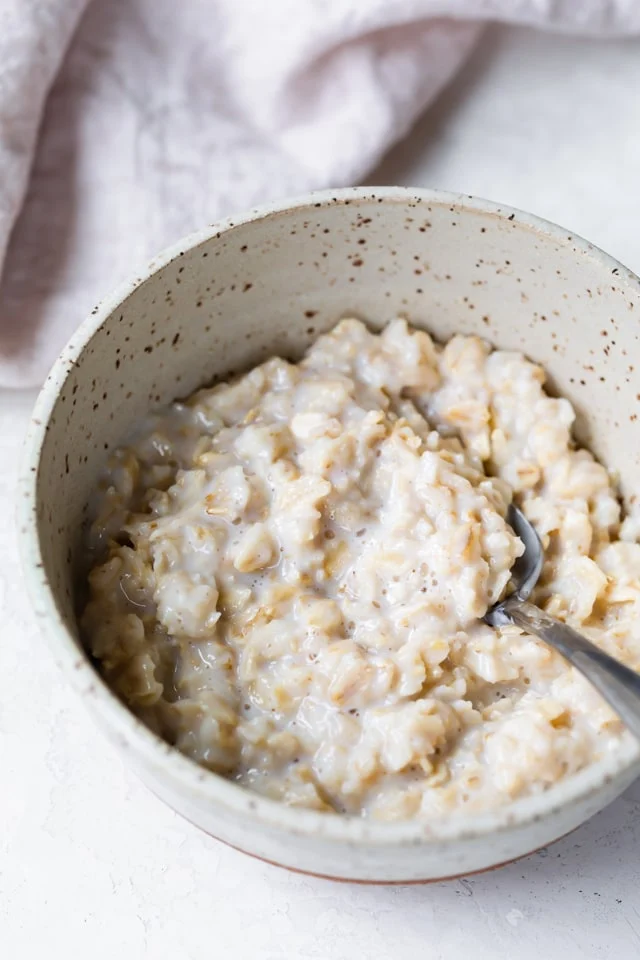

Oatmeal

Ingredients
- ½ cup oats
- 1 cup water
- Pinch salt
- 2-3 tablespoons milk
Steps
-
In a small saucepan, bring the water to a boil.
Reduce the heat to low and pour in the oats.
Cook, stirring occasionally, until the oats are soft and have absorbed most of the liquid, about 5 minutes.
Add the milk, remove from heat, cover and let stand for 2-3 minutes.
Home